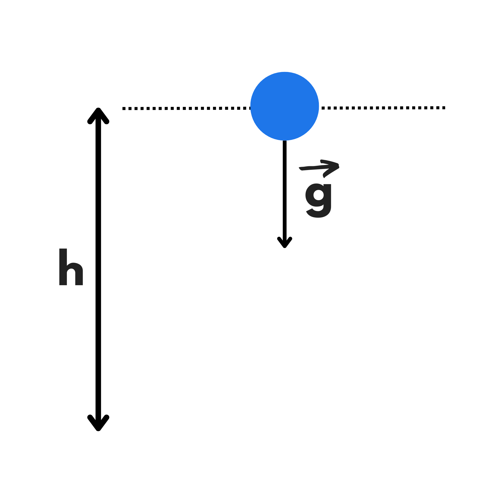
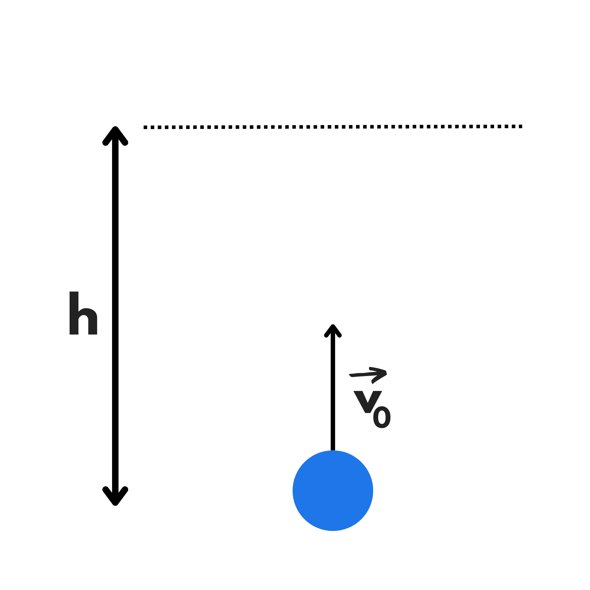

Il moto di caduta libera è il moto di un corpo libero di cadere da una certa altezza \(h\) da una situazione iniziale in cui stava fermo. Inoltre, l’attrito dell’aria deve essere trascurabile.
Quindi se prendete una penna in mano e la lasciate cadere, essa effettuerà un moto di caduta libera.
In un moto di caduta libera ci interessa trovare la velocità finale o il tempo impiegato (o entrambi) conoscendo l’altezza da cui cade.
Innanzitutto cominciamo dal notare che il moto di caduta libera è un caso particolare di moto uniformemente accelerato, dove la velocità iniziale è uguale a \(0\).
Se ci troviamo sulla Terra, l’accelerazione verso il basso è circa \(9,8\) \(m/\)\(s^2\) che viene solitamente chiamata \(g\). Se al posto della Terra ci troveremo sulla Luna, su Marte o altri luoghi particolari, basterà sostituire la loro accelerazione di gravità al posto di \(g.\)
Guardiamo ora invece alla legge oraria del moto rettilineo uniformemente accelerato:
\(S(t)=S_0 + v_0(t-t_0) +{a(t-t_0)^2 \over 2}\)
Per semplificare imponiamo l’origine (il nostro punto di riferimento) a terra, l’orientamento verso l’alto e \(t_0=0.\) Abbiamo poi visto prima che \(v_0=0\) e \(a=-g\) (\(-g\) perché abbiamo messo l’orientamento verso l’alto mentre a accelera verso il basso), quindi:
\(S(t)=S_0 +{-gt^2 \over 2}\)
Guardiamo quindi cosa succede quando \(t\) è proprio il tempo di caduta \(t_c .\)
Noi abbiamo messo l’origine per terra, quindi \(S_0\) (che è l’altezza iniziale) sarà uguale ad \(h\). Siccome \(t_c\) è il tempo nel momento dell’impatto, in quel momento il corpo si trova nell’origine e quindi \(S(t_c)=0.\) Quindi:
\(S(t_c)=S_0-{g {t_c}^2 \over 2}\)
\(0=h-{g{t_c}^2 \over 2}\)
Isoliamo ora \(t_c:\)
\({t_c}^2={2h \over g}\)
\(t_c=\sqrt{2h \over g}\)
Passando ora alla velocità finale, richiamiamo la legge oraria della velocità di un moto rettilineo uniformemente accelerato:
\(v(t)=v_0 +a(t-t_0)\)
Ricordandoci che \(t_0=0,\) che \(v_0=0\) e che \(a=-g,\) avremo:
\[v(t)=-gt\]
La velocità finale è la velocità nel momento in cui tocca terra, ovvero a \(t_c .\) Se quindi sostituiamo \(t_c\) al posto di \(t\) avremo:
\(v(t_c)=-gt_c\)
\(v_f=-g\cdot \sqrt{2h\over g}\)
\(v_f=-\sqrt{2hg^2 \over g}\)
\(v_f=-\sqrt{2hg}\)
La velocità è negativa perché abbiamo messo l’orientamento verso il basso. Se però vogliamo guardare solo al suo modulo senza considerare il suo verso, avremo:
\[|v_f|=\sqrt{2hg}\]
In questo modo, conoscendo soltanto l’altezza da cui cade un oggetto, saprete calcolare quanto tempo ci mette a cadere e la sua velocità nel momento dell’impatto.
Se vi state chiedendo perché un foglio di carta non segue queste formule, è perché in questo caso intervengono gli attriti o anche il vento che rallentano la caduta del foglio. Le nostre formule però sono un’ottima approssimazione per tutti gli oggetti che hanno poca superficie o tanta massa, come una penna o un quaderno.
Un fatto curioso è che i tempi di caduta di un’incudine e di una piuma, in assenza di attrito, sono uguali.
Cosa succede se lanciamo un oggetto verticalmente verso l’alto? Dovrà avere una fase di salita, quindi fermarsi ed avere quindi una fase di caduta.
La fase di caduta è un moto di caduta libera che già sappiamo analizzare. Guardiamo quindi alla fase di salita. Se l’attrito dell’aria è trascurabile avremo un moto di salita libera.
Noi stiamo quindi lanciando un oggetto verso l’alto con velocità \(v_0 ,\) esso viene decelerato dalla forza di gravità fino a quando non si ferma e ricade verso terra.
Quindi questa volta vorremo trovare la velocità iniziale ed il tempo conoscendo l’altezza a cui arriva.
Imponiamo l’origine nel punto in cui lanciamo l’oggetto, ovvero \(S_0=0,\) ed imponiamo \(t_0=0.\) Imponiamo anche l’orientamento verso l’alto. Quindi siccome l’accelerazione di gravità punta verso il basso, essa sarà uguale \(a -g.\)
Ricordiamo quindi la legge oraria del moto rettilineo uniformemente accelerato:
\(S(t)=S_0+v_0(t-t_0)+{a(t-t_0)^2 \over 2}\)
Che nel nostro caso diventa:
\(S(t)=v_0 \cdot t + {-gt^2 \over 2}\)
Alla fine del moto, ovvero nell’istante \(t_s\) (il tempo di salita), il corpo si troverà nel punto più alto, ovvero \(h\). Quindi:
\(h=v_0 \cdot t_s -{g{t_s}^2 \over 2}\)
Lasciamo quest’equazione un attimo da parte e guardiamo alla legge oraria delle velocità del moto rettilineo uniformemente accelerato:
\(v(t)=v_0+a(t-t_0\)
Siccome \(a=-g\) e \(t_0= 0\) avremo:
\(v(t)=v_0-gt\)
Siccome nel punto di massima altezza il corpo si ferma, la sua velocità in quel momento è \(0\), ovvero \(v(t_s)=0\) quindi:
\(0=v_0-gt_s\)
\(v_0=gt_s\)
Possiamo ora sostituire \(v_0\) nell’equazione ricavata dalla legge oraria del moto rettilineo uniformemente accelerato:
\(h=v_0 \cdot t_s -{g{t_s}^2 \over 2}\)
\(h=gt_s \cdot t_s- {g{t_s}^2 \over 2}\)
\(h= {{2g{t_s}^2 -g{t_s}^2}\over 2}\)
\(h={g{t_s}^2\over 2}\)
Isolando il tempo di salita:
\({t_s}^2={2h\over g}\)
\(t_s=\sqrt{2h\over g}\)
Sostituendo nella legge oraria della velocità:
\(v_0=gt_s\)
\(v_0=g\cdot \sqrt{2h\over g}\)
\(v_0=\sqrt{2hg^2 \over g}\)
\(v_0=\sqrt{2hg}\)
Si può notare che il tempo di salita è lo stesso identico al tempo di caduta. Quindi quando si lancia un corpo verso l’alto, questo ci mette lo stesso tempo sia per salire che per scendere.
Stessa cosa per la velocità: la velocità con cui si lancia verso l’alto è la stessa (in modulo, ma di segno opposto perché adesso è verso il basso) velocità con cui ricade in mano (se si riprende alla stessa altezza da cui è stato lanciato).